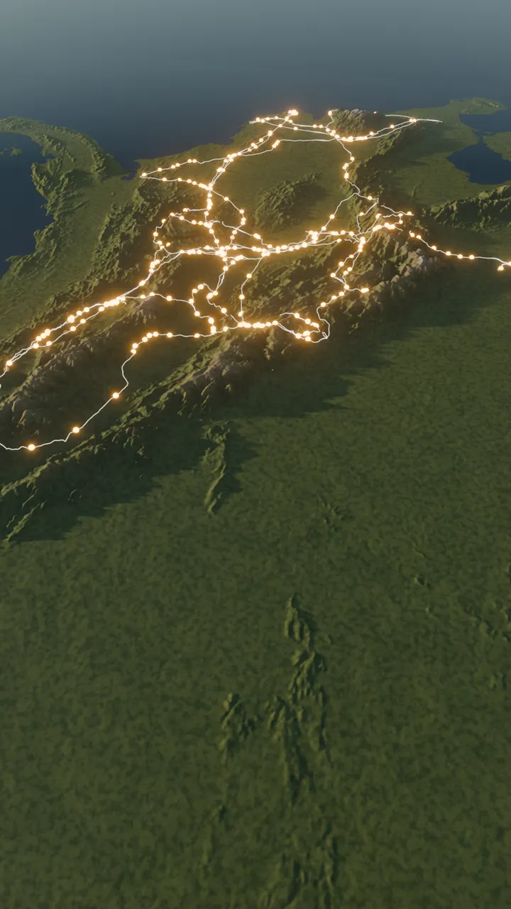
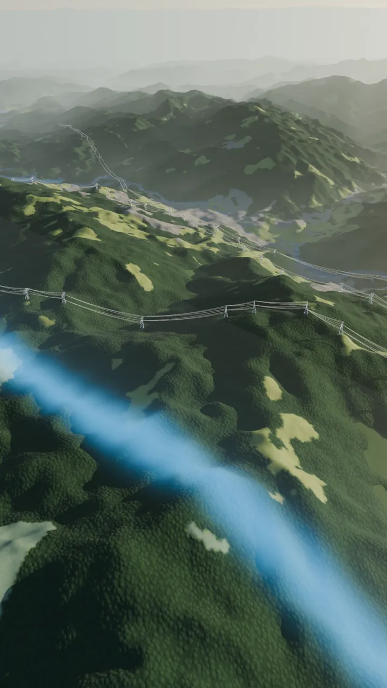

De Watts a Wow · Grupo 2 La red de transmisión y las montañas que la sostienen
Tres miradassobre lamontaña
Las torres que llevan la energía del país están paradas sobre laderas que a veces se mueven. Tres videos y un modelo propio de inteligencia artificial para mirarlas desde las personas, la tecnología y el territorio.
La trilogía Tres videos, la misma montaña
Una montaña, tres miradas.
Cada video mira la misma pregunta desde un lugar distinto: qué ven las personas que viven en la ladera, qué puede hacer la tecnología y por qué cada territorio se mueve distinto. Pasa el cursor sobre cada tarjeta para ver su toma 3D.

Ojos en la ladera
Dibujamos a mano 10.265 deslizamientos y flujos. Donde alguien miró con cuidado aparecieron seis veces más. El sensor que le falta al mapa vive en la ladera.
Entrar al capítulo →
Ver venir la montaña
Un modelo que aprendió de 24.287 movimientos en masa dónde es más propensa a moverse la tierra, y por qué el agua de semanas pesa más que la lluvia del día.
Entrar al capítulo →
Cinco montañas, una red
Las 22.263 torres repartidas en cinco pisos según su altura y su lluvia. En cada piso la montaña se mueve por una razón distinta.
Entrar al capítulo →movimientos en masa en el corredor, de los que 10.265 los fotointerpretamos nosotros.
Inventario propio + nacionalde los eventos cae en el 20 % del corredor que nuestro modelo marca como más propenso, en zonas que no vio al aprender.
AUC 0,835 · 5 particionesde las 22.263 torres de la red están en el 15 % del corredor más propenso a moverse.
Cálculo propio · red STNmás deslizamientos registrados por km² en el piso templado y muy lluvioso que en el cálido y seco.
Inventario nacionalLos videos Trilogía en formato vertical
Míralos aquí.
Empieza por las señales que puedes reconocer en una ladera. Después, descubre cómo se anticipa el riesgo y cómo cambia a lo largo de la red.
Música de los videos: «Divider», de Chris Zabriskie. Edición y mezcla para la trilogía bajo CC BY 4.0.


El corredor 73.119 km² alrededor de la red
Una franja de diez kilómetros.
Tomamos una franja de 10 km alrededor de toda la red de transmisión nacional y la partimos en celdas de 12,5 m. Para cada celda, nuestro modelo calcula qué tan propenso es el terreno a moverse comparado con el resto del corredor.
El color va de verde (menos propenso) a rojo (más propenso). Es un índice relativo: ordena el terreno, pero no es una probabilidad ni dice cuándo pasará algo. Por eso lo comunicamos como «el 15 % más propenso».
Activa los focos de calor para ver la temporada seca de enero a abril de 2024, al final del Niño anterior. El fuego deja la ladera sin la vegetación que la sostiene.
Este es un proyecto propio: el modelo, el inventario fotointerpretado y los cruces con las torres los hicimos nosotros. No son resultados de ISA ni datos oficiales.